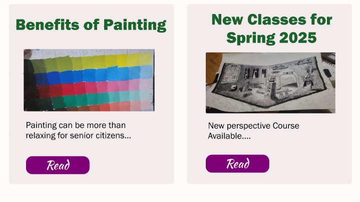
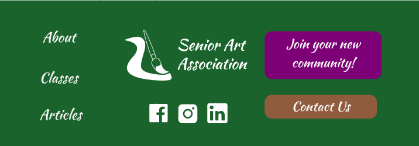
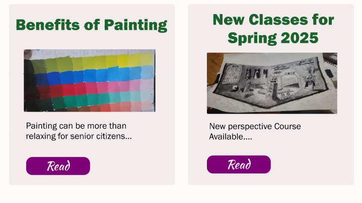
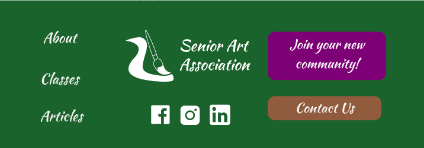

Senior Art Association
Spring 2025
Figma, Adobe Illustrator
Challenge: Create a front page for a website of my own creation that tackles the porblem of elderly loneliness that has a website and mobile version.
Process: To start the process of tackling the problem I decided on I thought of different ways to tackle this problem, including things like transportation, and improving commuication understandings for the elderly. Ultimately I realized during brainstotming that what I wanted to do was solve this issue by creating a way to get senior citzens involved in community activites which lead to me wanting to create a website to encourage senior citizens to sign up for inperson art classes. After that I did research into what type of fonts and graphics worked best with elderly people when viewing websites and also did competitive analysis of similar websites from the UC Davis Craft Center page to a few art blogs and other websites. After getting enough of an idea of what my website should look like I went to figma to start working on my wire frames.
Wireframes (Desktop)
Wireframes (Phone)
Once I completed the wireframes I started working on creating a more higher fidelity prototype creating a style guide with certain fonts and using a green, purple, and orange color scheme. For the graphics and photos I wanted to avoid using stock images as much as possible so I drew my own logo which I then turned into a vector image in illustrator, aswell as creating a few more vector assets to decorated the page. For the photos since I had a lot of photos of various different art projects, I decided to used them for my carosuel I made in figma, having photos for a painting class, still life drawing, and cardboard craft class. I also used a few more for my news tab for example articles. One challenge I faced was the hero image for the website. I wanted a photo of senior aged citizens engaging with drawing, but I didn't already have photo that matched or means to take one while at school in davis, so I ended up contacting my family at home in the bay area to have them take a few photos of them doing art and send them to me for my project, allowing em to keep up the rule of no stock photos for the website.
During testing for our prototypes I also had to make decisions on what my brand was like, deciding to make them a local organization dedicated to helping senior citizens engage in the arts. The teacher's assistant for my class also brought to my attention the idea of if I should do a age requirement or not, after thinking about it for a while I decided to include an age limit of 65 or older in my design brief because I wanted to make as comfortable of an environment for senior citizens as possible. During a round of audience testing in my class I found out that I needed to adjust font sizes and colors to make it more visible for an elderly audience, and ajust the spacing of my elements to make sure that everything was spaced properly while scrolling. These were implemented in the final designs for the website prototype. For the phone version of the website I added a hamburger menu for navigation and removed the carosuel so the class preview had the neccessary space and added a read more tab.
Prototype (desktop)
 



Prototype (phone)
After making my more adjustments after testing I presented the project to my instructor, and she gave me more feedback regarding centering the text and changing of wording for buttons that I tried to address before turning this project in. While this wasn't the first time I was apart of designing a website in figma, it was the first time I designed one completely from the ground up, without support from a team, although in several ways it was still a collaborative process with receiving feedback from peers and my instructor. In this I learned how to do competive analysis and how to go from finding a problem to creating a solution through ui/ux design. I also learned how to translate a design between a phone and desktop version. I would like to return to this project one day to further flesh it out in the future.
Project Link